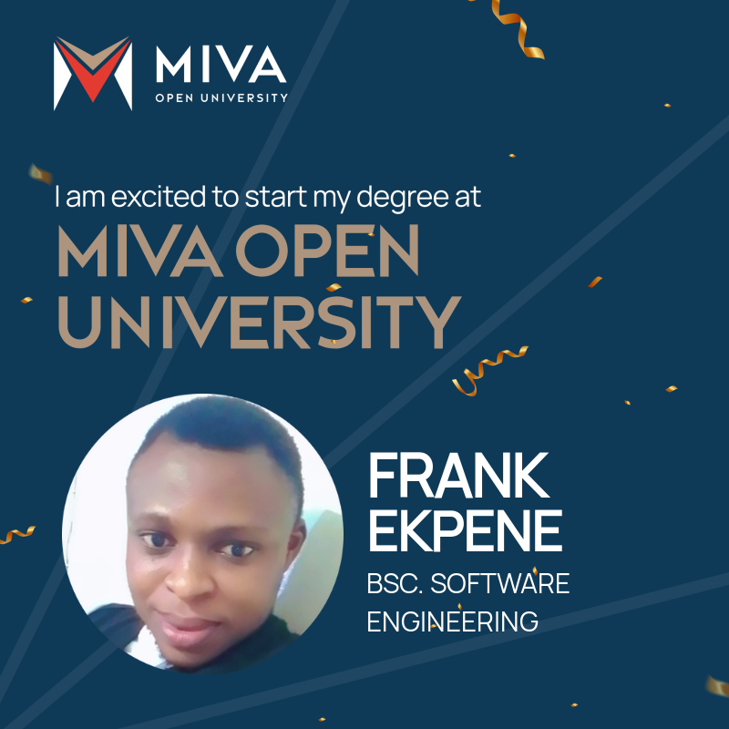

🎓
My Education
I am studying B.Sc. Software Engineering at Miva Open University, building knowledge of computing, programming and web technologies.
Welcome to My Miva Journey — a portfolio documenting my growth as a Software Engineering student at Miva Open University and my developing passion for Quality Assurance (QA), software testing and building reliable digital products.
I am learning how software is designed, developed and tested. I enjoy exploring applications, checking how features behave, writing test cases, identifying defects and thinking about how to improve the user experience.
Explore My QA ProjectsContact Me
My journey combines academic learning, practical testing exercises and a commitment to continuous improvement.
I am studying B.Sc. Software Engineering at Miva Open University, building knowledge of computing, programming and web technologies.
I am developing practical skills in manual testing, test case design, exploratory testing, defect reporting and API testing fundamentals.
My goal is to grow into a skilled Quality Assurance professional and contribute to software products that are dependable, useful and easy to use.
Listen to this short reflection on my studies at Miva Open University and what I am learning in COS 106.
This spoken audio demonstrates the multimedia requirement for my COS 106 portfolio.